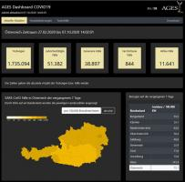
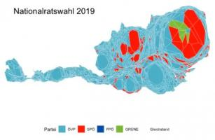

Auch auf data.gv.at
Bauperioden und Bautypologien Wien
Für große Teile des Wiener Stadtgebietes werden Informationen zu …

Schummerung GELAENDE Österreich
Schummerung GELAENDE Österreich gerechnet aus den ALS-Daten der Länder …
Baumkataster (Linz)
Alle von der Stadt Linz betreuten Bäume mit Informationen zu Gattung, …
Wiener Linien Echtzeitdaten via …
Echtzeitdaten der Wiener Linien Die Abfrage der Echtzeitdaten der Wiener …

COVID-19: Daten zur Auslastung in …
Anzahl der Covid-19 Tests, Anzahl der bezüglich Covid-19 belegten …
Elektrische Energie in Wien nach Sektoren …
Elektrische Energie in Wien nach Sektoren in GWh
Voranschlag Dornbirn 2015 (Gemeinde)
Voranschlag der Gemeinde - Einnahmen und Ausgaben

Ergebnisse der Nationalratswahl 2019 …
Ergebnis der Nationalratswahl am 29.09.2019 inklusive aller …